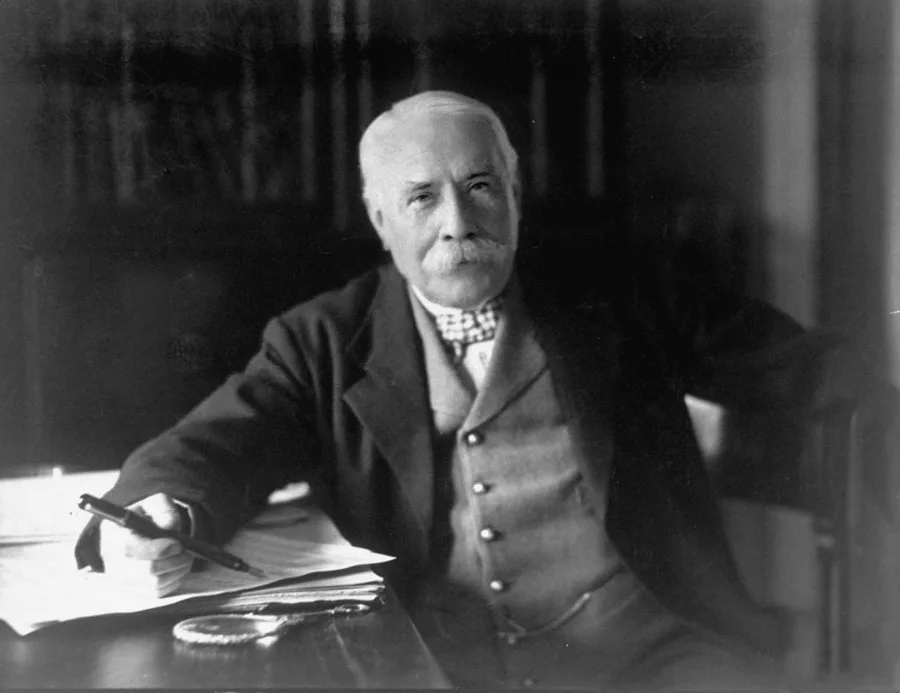

Music pioneer · Romantic · Composer arrangement studio
Edward Elgar
Choose “Nimrod” or Salut d’Amour, then press Play. “Nimrod” grows from a hushed opening to a huge climax and back; Salut d’Amour is a short, tender love song without words. Compare how each one shapes its melody. Playback uses sampled or synthesized instruments; consult the linked edition for fingering, bowing, pedaling, and expressive detail.
Arranging with care
A source staff is not always the melody: in an orchestral score, find the staff carrying the theme. A two-part piano study pairs your selected voice with a source bass; it is not a concert reduction and wide leaps may need redistribution. Saxophone notation is transposed while playback stays at concert pitch. Violin parts stay at concert pitch and are moved by octaves to sit above the open G string. Guitar tab preserves pitch and rhythm but may need a different octave or fingering. Original ensembles are available only where the source contains those parts. Piano reductions and original classroom studies retain their source identities.
Recordings: Nicholaus P. Brosowsky’s Tonejs-Instruments sample collection, CC BY 3.0; VSCO 2 Community Edition, CC0. Sample credits and processing.
Music pioneer · Romantic · 1857–1934
About Edward Elgar

Edward Elgar (1857–1934) had almost no formal training and spent years as a provincial violin teacher before, in his forties, he became England’s most celebrated composer. His Enigma Variations paint his friends in music.
Life and context
Elgar was born on 2 June 1857 in Lower Broadheath, near Worcester, England. His father tuned pianos and ran a music shop, where the boy read every score he could find. He taught himself composition from books and scores and earned a living as a violinist, organist and teacher, and as bandmaster at a local asylum.
In 1888 he gave a short piece for violin and piano to Caroline Alice Roberts as an engagement present. He called it Liebesgruss (“Love’s Greeting”); the publisher renamed it Salut d’Amour to sell more copies, bought it outright for a small fee, and earned a fortune from it. Elgar and Alice married in 1889, and she believed in his gift through years of struggle.
His breakthrough came in 1899 with the Variations on an Original Theme, the “Enigma” Variations. Each of the fourteen variations is a portrait of one of his friends, identified only by initials or nicknames. Variation IX, “Nimrod”, portrays August Jaeger, his editor at the publisher Novello. Jaeger is German for “hunter”, and Nimrod is a mighty hunter in the Bible. The music recalls a conversation in which Jaeger encouraged a discouraged Elgar by talking about Beethoven’s slow movements.
Fame followed: the oratorio The Dream of Gerontius (1900), the Pomp and Circumstance marches (from 1901; the trio of No. 1 is played at graduations across the United States), two symphonies and the Cello Concerto (1919). He was knighted in 1904, became Master of the King’s Music in 1924, and conducted many of his works for early gramophone recordings. He died in Worcester on 23 February 1934.
Edward Elgar: a timeline
- Born in Lower Broadheath, near Worcester, on 2 June.
- Becomes bandmaster at the Worcester county asylum at Powick.
- Writes Salut d’Amour as an engagement gift.
- Marries Caroline Alice Roberts.
- The Enigma Variations premiere in London.
- The Dream of Gerontius premieres in Birmingham.
- Composes Pomp and Circumstance March No. 1.
- Knighted.
- Completes the Cello Concerto.
- Becomes Master of the King’s Music.
- Dies in Worcester on 23 February.
Theme and variations as portraits
In a theme and variations, a composer states a melody and then changes it again and again: its speed, rhythm, key, instruments or mood. Elgar made each variation a character sketch of a friend.
“Nimrod” is slow and noble. It begins very quietly, adds instruments and register a little at a time, and reaches a huge climax before fading away. That long, controlled crescendo is why it is often played at memorials and ceremonies.
Music pioneer · Romantic
Sound experiment: theme and variations as musical portraits
Version A plays a tune quickly. Version B plays the same notes slowly with a low bass, the way a variation can transform a theme. Does the character of the tune change?
This is an original classroom demonstration of a musical idea, not an excerpt or recording of the composer’s work.
Choose a version, then press Play.
Guided listening
Choose a performance of one of these works. Listen once for its overall character, then again for the detail in the prompt.
- “Nimrod”: follow the long crescendo. Where is the loudest moment, and how long does the music take to get there?
- Enigma Variations, Variation XI (“G.R.S.”): a portrait of an organist’s bulldog falling into a river. Can you hear the splash?
- Salut d’Amour: listen to a tender melody that sounds like a singer, though it has no words.
Practice and reflection
- Find where “Nimrod” is quietest and where it is loudest. How many bars does the build-up take?
- Compare the opening bars of Salut d’Amour and “Nimrod”. Which moves faster, and how can you tell from the score?
- Choose a friend or family member. Describe the variation you would write to portray them: tempo, loudness, instruments and rhythm.
Check your listening
“Nimrod” grows gradually from very quiet to very loud by adding instruments, raising the register and thickening the chords, then falls away again. A useful answer names a feature you can hear and explains its effect. More than one interpretation is possible.
Use the heart | save pill to keep these notes in this browser, or copy them before leaving.